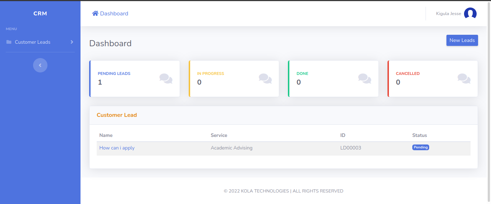
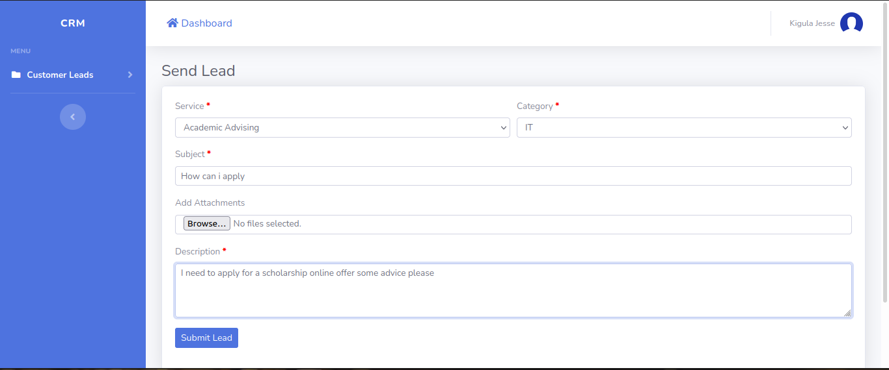
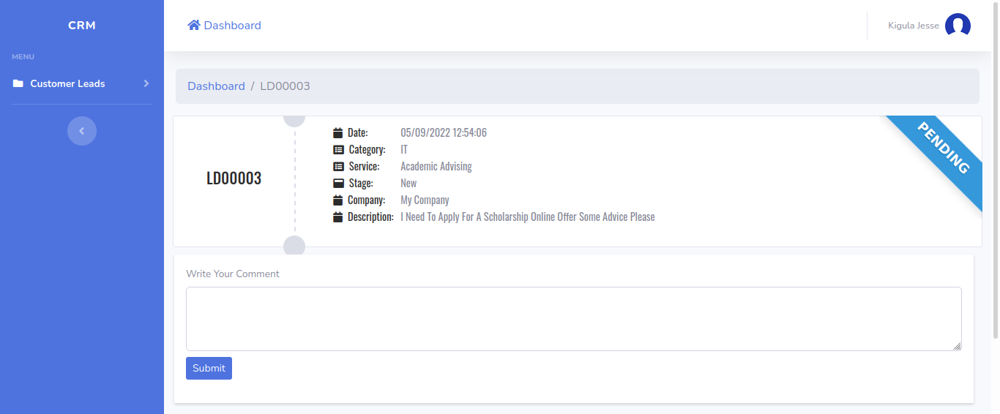
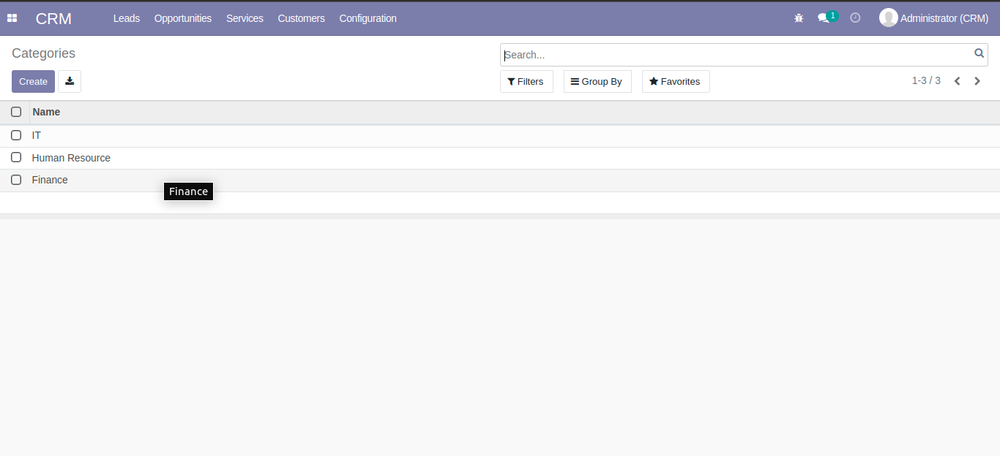
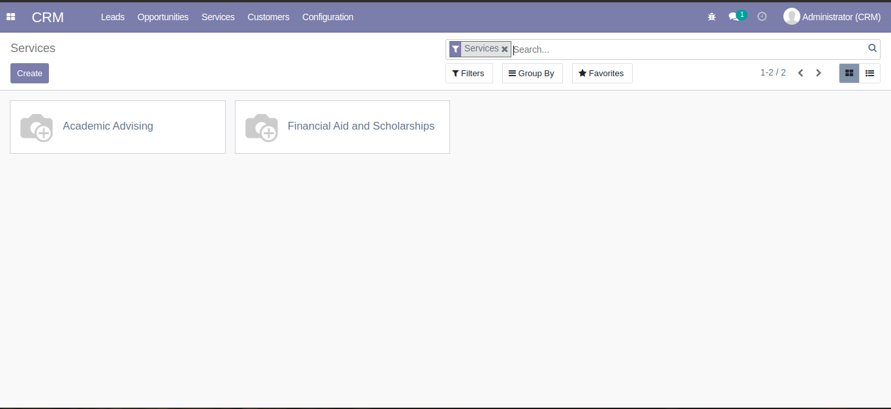

<section class="oe_container">
<div class="oe_row oe_spaced">
    <h2 class="oe_slogan" style="color:#3498db;">CRM FRONTEND FOR CUSTOMERS</h2>
    <div class="oe_span10">
        <p class="oe_mt32">
            <span style="font-size:14px;">
                This module provides a frontend for customers to continuously place and 
                track their requests. An interaction history easily accessible can help customer support representatives 
                provide better and faster customer service.<br><br>
            </span>
            <h4>Specifications</h4><br>
            - Customers Lead dashboard to see all leads per stage<br>
            <br><br>
            
            - Customers can submit new leads<br>
            <br><br>

            - Customers can view and comment on leads. The business can reply to these comments<br>
            <br><br>


            <h4>Configuration</h4><br>
            - Set Up Categories for your Customer Leads under the Configuration menu in CRM<br>
            <br><br>
            
            - Set Up Services that your company provides for customers to inquire about.<br>
            <br><br>

            - Configure smtp email or email verification for new users wont work.<br>
            - Enable Free sign up for customers under Settings.
        </p>
    </div>
</div>
</section>
    
